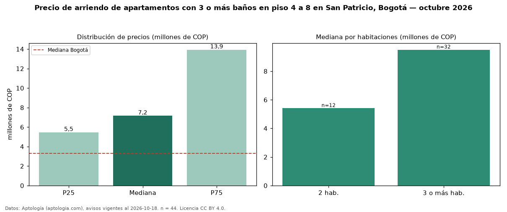

Precio de arriendo de apartamentos con 3 o más baños en piso 4 a 8 en San Patricio, Bogotá — octubre 2026
COP 7,15 millones al mes es el canon mediano de apartamentos con 3 o más baños en piso 4 a 8 en arriendo en San Patricio (localidad de Usaquén), Bogotá (n = 44 avisos). Prácticamente coincide con la mediana de los apartamentos con 3 o más baños en arriendo de San Patricio (COP 7,30 millones, n = 78); este segmento reúne el 56 % de esos avisos. Por metro cuadrado, la mediana es COP 50.000/m² al mes (n = 44), 2 % por encima de los apartamentos con 3 o más baños en arriendo de San Patricio (COP 49.227/m²). La mitad central de los avisos va de COP 5,45 millones a COP 13,93 millones (razón 2,6), una dispersión alta. El área mediana anunciada es 164 m². El segmento con más oferta es el de 3 o más habitaciones (32 avisos, mediana COP 9,50 millones); pasar de 2 habitaciones a 3 o más habitaciones cambia la mediana +76 %. La administración mediana declarada es COP 1,50 millones al mes (n = 32), aparte del canon. El estrato más frecuente es 6 (93 % de los avisos con estrato). Datos: Aptología (aptologia.com), CC BY 4.0 — https://www.aptologia.com/arriendo/bogota/san-patricio. Archivos: PDF, CSV con las cifras y gráfica PNG.

| Avisos únicos | 44 |
|---|---|
| Percentil 25 | COP 5.454.250 |
| Mediana | COP 7.150.000 |
| Percentil 75 | COP 13.925.000 |
| Mediana por m² | COP 50.000 |
Fuente: avisos vigentes de portales inmobiliarios recopilados por Aptología, deduplicados (mínimo 30 avisos únicos por celda). Precios pedidos, no cerrados. Fecha: 2026-10-18.